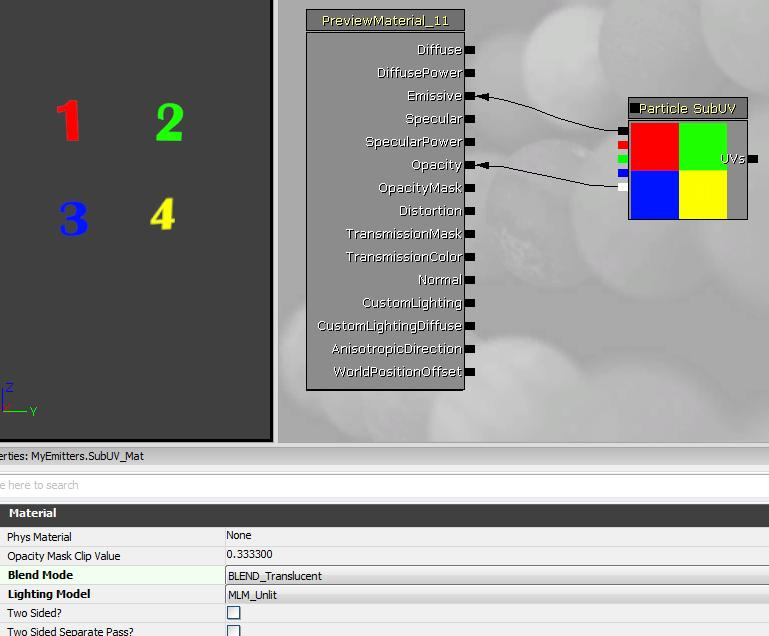

Particles SubUV Tutorial
Overview
The Unreal Engine's Particle System provides an emitter TypeDataModule that allows for the selection of sub-images from a source texture to be displayed on its particles. It works by allowing you to select the sub-image to display for a particular particle as a function of the lifetime of the particle. See the CascadeUserGuide for a general description of the Cascade Particle Editor.
This document assumes you are familiar with the Content Browser, and with creating packages and objects within those packages.
Create a new ParticleSystem
Start the editor, right-click in the Content Browser, and select "New ParticleSystem". The New window will pop-up, prompting you for a package name, object name, and the factory as shown below:
Enter the following information:
| Package | MyEmitters |
| Group | |
| Name | SubUV_Emitter |
| Factory | should be on ParticleSystem |
[[NOTE: If you have done other particle system tutorials, the MyEmitters package may already exist. In this case, if you do not want to lose the previous work and the package is not open, open the MyEmitters package and perform the right-click in the browser window for MyEmitters.]
This will result in the following insertion into your MyEmitters package:
Import a Texture
In this example, we will be using a simple 'subdivided texture' called ColorQuads. The texture consists of a simple quartered color square scheme, with the alpha channel embedding the numbers 1, 2, 3, and 4 in each sub-square from left-to-right and top-to-bottom. This image allows for simple verification that the sub-image system is working.
After importing the texture, MyEmitters in the browser should look similar to the shot below:
Create a ParticleSubUV Material
The next step is to create a material that will be applied to the sprites generated by the particle emitter. Right-click in the MyEmitters browser window and select "New Material". Name the material "SubUV_Mat" and open it in the Material Editor.
In the case of Sub-UV emitters, a special material expression, ParticleSubUV, must be used. First select the ColorQuads texture in the Content Browser, then right-click in the material editor window and pick it from the list as shown below:
The following material expression widget will appear in the editor:
The next step is to `hook-up' the SubUV expression to the output of the material. In this simple case, just run the RGB output to the Emissive input, and the Alpha output to the Opacity, as shown below:
If desired, the blend mode of the material can be set according to how you want the particles to be drawn. In this case, we will use "BLEND_Translucent", so select it as shown in the screen shot below:

The View So Far
Provided this tutorial was started with no MyEmitters package, the browser window should look similar to the following:
Create the Particle SubUV Emitter
To open the Particle Editor, Cascade, right-click on the ParticleSystem and select it from the menu as shown below:
Once Cascade opens, select the SubUV_Mat in the Content Broswer and right-click the `emitter bar' and select "New ParticleSpriteEmitter" as shown below:
At this point, you should see the following view in Cascade, showing the newly created Emitter in the preview window:
Located in the 'Required' class are the SubUV-related settings: the InterpolationMethod, and the Horizontal and Vertical sub-image counts for the texture.
Setting up the SubUV parameters
Enter the following information for the given fields:
| SubImages_Horizontal | 2 |
| SubImages_Vertical | 2 |
| InterpolationMethod | PSSUV_Linear |
This informs the emitter that the sub-images are laid out in a 2x2 grid, and that the interpolation should be in a linear fashion between sub-images.
As you can see, the emitter is selecting the `first' sub-image for the supplied texture, as the default sub-image index will be a constant 0.
Setting the SubImage Selection
Add a SubImage index module to the Emitter by right-clicking and selecting it from the list. The properties for this module will now be displayed in the lower-left panel of Cascade. There is only one piece of information contained in the SubImageIndex module, and that is a scalar distribution named "SubImageIndex".
Switch the distribution to a Constant Curve by clicking on the blue arrow and selecting it from the list.
Click on the small green 'graph button' on the SubImage Index module of the emitter to add the curve to the curve editor.
Add a curve with data points at the following increments:
| Time | Value |
| 0.00 | 0.00 |
| 0.75 | 3.01 |
This will generate an emitter that smoothly transitions between all of the existing sub-images, giving each one approximately 25% of the lifetime of the particle. Below is a screenshot:
The MyEmitter package is available here.
Important!
You are viewing documentation for the Unreal Development Kit (UDK).
If you are looking for the Unreal Engine 4 documentation, please visit the Unreal Engine 4 Documentation site.